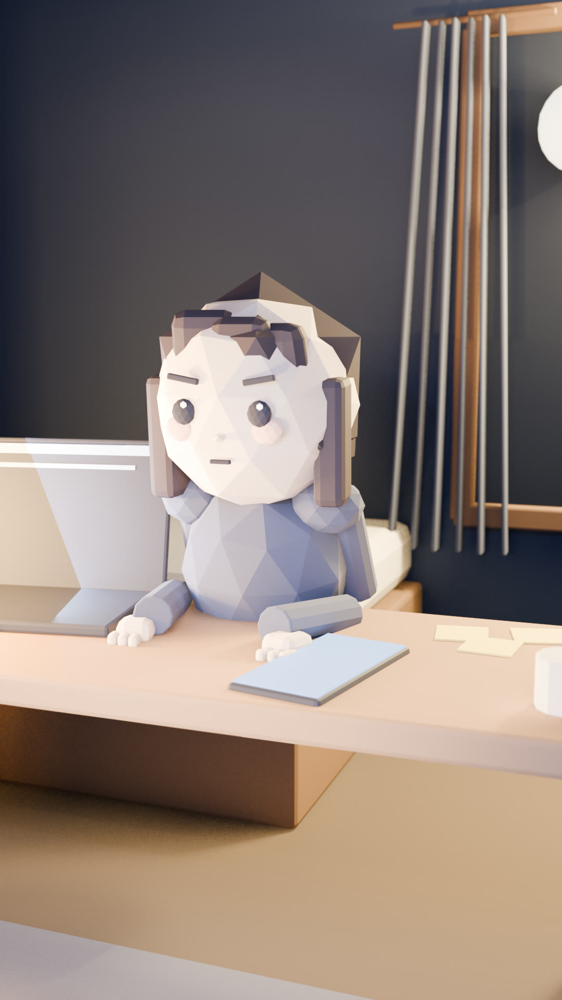
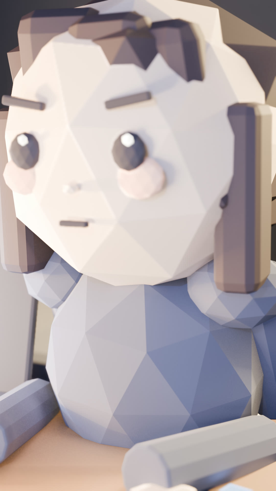
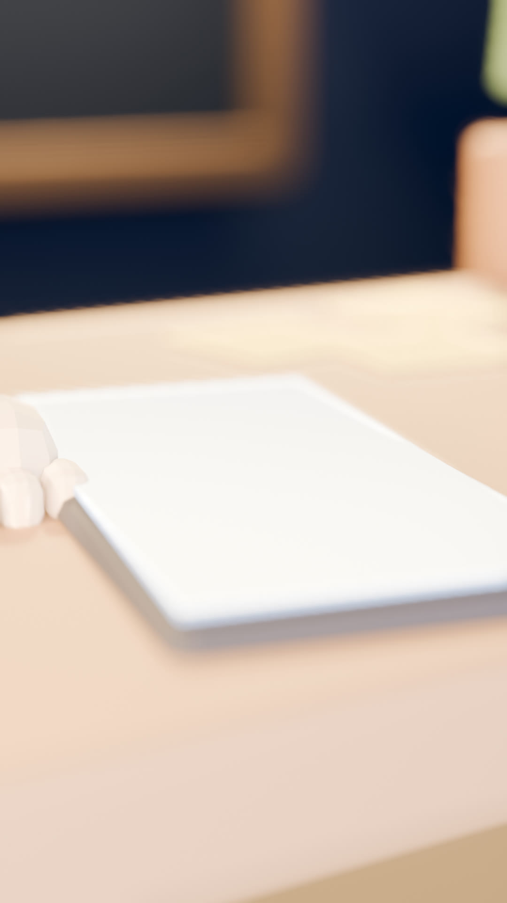

Panel 1–3, 9: still Blender (cahaya kuning hangat, ambience biru dongker). Panel 5, 7, 8: tangkapan layar asli sloe.my.id. Panel 4 & 6: mock bergaya UI asli, karena dua keadaan itu belum ada di produk.
58 sdurasi
1080×1920portrait
30 fps
9adegan
10:00–0:06Kamar malam

Blender · warm key + navy ambience
VO: “Cari kerja itu nggak seharusnya jadi kerjaan kedua.”
Lampu meja kuning memegang kiri frame, jendela memberi rim hangat, dinding biru dongker tetap terbaca. Push-in 5%.
20:06–0:13Kekacauan

Blender · closeup
VO: “Screenshot di galeri. Link di DM. Semua disalin ke spreadsheet, dan tetap nggak kelihatan mana yang harus dikejar dulu.”
Tiga sisipan 0,9 s di atas closeup ini: galeri poster, DM berisi link mentah, spreadsheet 9 pt dengan #REF!.
30:13–0:18Notif teman

Blender · HP di meja
VO: “Sampai temanmu kirim satu link.”
Notif “coba sloe.my.id” masuk 0,4 s setelah cut. Layar HP satu-satunya cahaya dingin di frame.